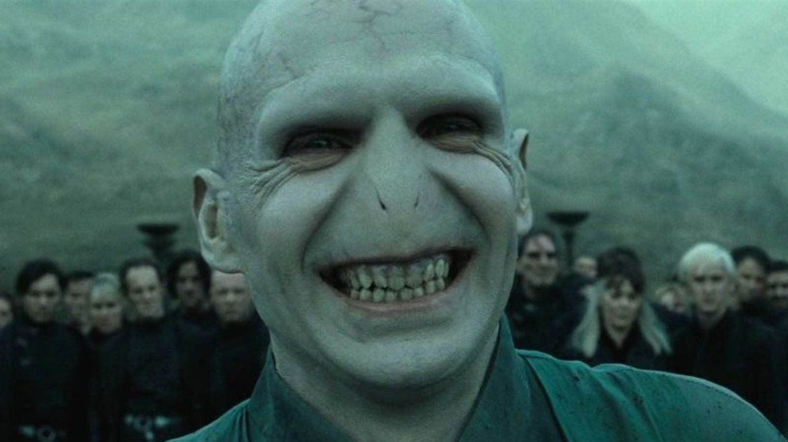

Beveiligingsbedrijf Proofpoint heeft een nieuwe malware ontdekt die door de criminelen ‘Voldemort’ is gedoopt. Eerder deze maand identificeerden onderzoekers van het cybersecuritybedrijf een ongebruikelijke campagne die een nieuwe aanvalsketen gebruikte.
De criminelen zelf noemen de malware ‘Voldemort’, zo blijkt op basis van het analyseren van interne bestandsnamen en strings. De schadelijke activiteiten van Voldemort omvatten meer dan 20.000 berichten die impact hadden op 70 organisaties wereldwijd. 
De aanvalsketen bestaat uit meerdere populaire technieken en ongebruikelijke methoden voor commandovoering, zoals het gebruik van Google Sheets. De combinatie van de tactieken, technieken en procedures (TTP’s), overheidsthema’s en vreemde bestandsnamen en wachtwoorden zoals “test” zijn opmerkelijk. Op basis van het grote aantal berichten en de analyse van de malware blijkt dat het gaat om een dreigingsactor, waarschijnlijk een Advanced Persistent Threat (APT), die het verzamelen van informatie als doel heeft.
Net als Voldemort, richt de dreigingsactor zich op een groot publiek: achttien verschillende branches, waarvan bijna een kwart verzekeringsmaatschappijen. Ondanks het brede doelwit en kenmerken die meer overeenkomen met cybercriminele activiteiten, tonen de activiteiten en de mogelijkheden van de malware dat er meer interesse is in spionage dan in financieel gewin. Desondanks is het mogelijk dat toekomstige activiteiten van Voldemort deze beoordeling veranderen.